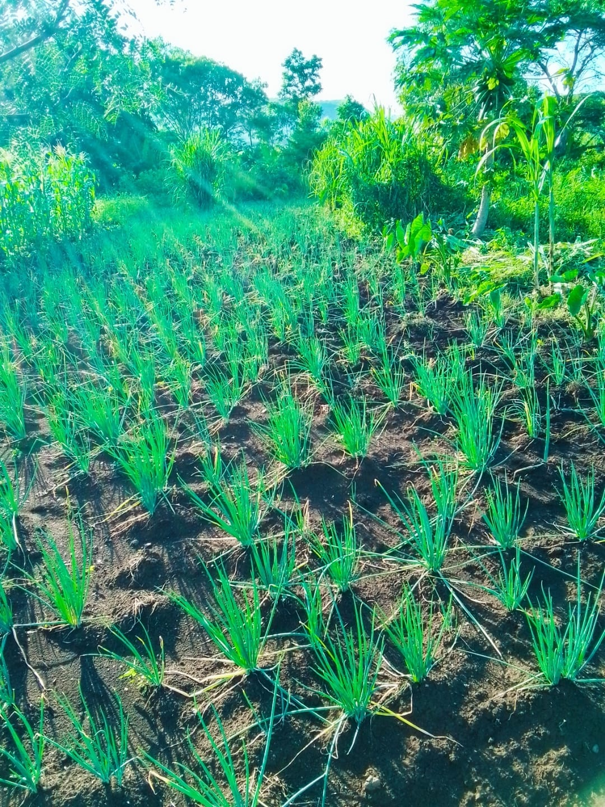

My name is Abayo Brian, a Junior Data Scientist, where I specialize in Data Science and Machine Learning. I am passionate about utilizing data science techniques to solve real-world problems, especially in sectors like agriculture, business solutions, and fraud detection. This portfolio reflects my academic journey, the projects I’ve worked on, and the skills I’ve developed.
As a Data Scientist deeply interested in the transformative power of technology, I aim to harness machine learning and data science to drive impactful change in various industries. My focus is on leveraging data to improve decision-making processes, increase efficiency, and promote sustainable practices. Through this portfolio, I hope to demonstrate how my academic background and practical experiences align with my career goals.
This portfolio not only showcases my skills but also highlights my commitment to applying data-driven solutions in meaningful ways. From agricultural platforms to fraud detection systems, the projects featured here reflect my dedication to solving complex challenges with innovative, data-centric approaches.
Data Science
Building a platform to link producers and consumers, enable market price tracking, and offer disease identification solutions.

The Agricultural Data Platform is designed to connect agricultural producers with consumers through a centralized system offering real-time market data, disease identification, and a virtual marketplace for agricultural goods. It leverages machine learning and artificial intelligence to optimize farming operations, providing farmers with actionable insights to make data-driven decisions. Key features include market price tracking, which helps farmers set optimal selling prices, and disease identification through image recognition, enabling early detection and prevention of crop diseases. Additionally, the platform provides a marketplace where farmers can list their produce, enhancing their reach and promoting sustainable consumption.
The platform was developed to address challenges faced by farmers, such as limited access to market data and the unpredictability of crop diseases. It was created in response to the growing demand for technological solutions in agriculture, especially in regions where traditional farming methods are prevalent. The development of AgTech, powered by advances in machine learning, mobile technology, and cloud computing, has significantly enhanced the scalability and effectiveness of such platforms, contributing to the broader movement of smart farming.
The Agricultural Data Platform offers numerous advantages, including increased efficiency, productivity, and cost reduction. By providing market trends and disease detection tools, the platform allows farmers to make informed decisions that lead to higher crop yields and reduced losses. It also supports sustainability by promoting local sourcing and reducing the environmental impact of long-distance food transportation. Furthermore, the platform enhances access to markets for small-scale farmers and provides data-driven insights that help farmers optimize resource management, improve yields, and minimize waste.
Data Science & Machine Learning
- Analysis: Proficiency in statistical methods and hypothesis testing.
- Preprocessing: Cleaning, wrangling, and transforming data for analysis.
- Machine Learning: Supervised and unsupervised learning techniques, model evaluation, and optimization.
Python, R, SQL
- Python: Pandas, NumPy, Scikit-learn for data manipulation and modeling.
- R: Statistical computing and advanced visualizations.
- SQL: Data querying and management in relational databases.
Learning & Transfer Learning
- Networks: Understanding architectures like CNNs, RNNs, and transformers.
- Learning: Utilizing pre-trained models for specialized tasks.
Data Mining & Visualization
- Data Mining: Discovering patterns and insights from structured and unstructured data.
- Visualization: Creating charts and dashboards using Matplotlib, Seaborn, Tableau, and Power BI.
AI for Healthcare & Agriculture
- Healthcare: Predictive analytics and disease diagnosis using machine learning.
- Agriculture: Smart farming solutions and pest/disease identification through AI.
Interested in collaborating on a project or have a question? Feel free to reach out to me!
I'm always open to new opportunities in data science, agriculture, and machine learning.
Contact Me